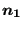
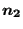
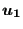
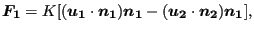
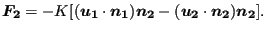

Next: Two-node 3-dimensional spring (SPRINGA) Up: Element Types Previous: One-node 3-dimensional spring (SPRING1) Contents
This is a spring element which is attached to two nodes (Figure 79). The directions
   is the spring
constant, the force in node 1 is obtained by:
is the spring
constant, the force in node 1 is obtained by:
 |
(25) |
and the force in node 2 by:
 |
(26) |
A nonlinear spring can be defined by specifying a piecewise linear force versus elongation relationship (underneath the *SPRING card).